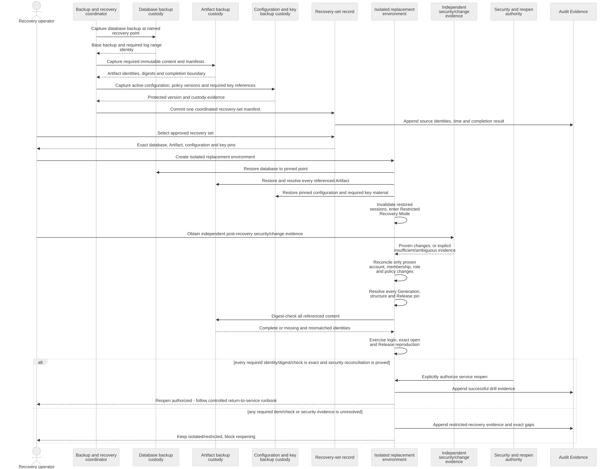

DOC-05 candidate diagrams. Rendering is not a recovery test or independent architecture approval.
ARCH-VIEW-SEQ-011 — Coordinated exact backup and recovery
A backup coordinator selects one recovery point and records a recovery-set manifest that joins the database point, every required immutable Artifact, active configuration and policy versions, and required protected key material. During recovery, an operator restores these parts into an isolated replacement, invalidates restored sessions and enters Restricted Recovery Mode. Post-recovery security changes are reconciled only from independent operational evidence, never by automatic replay. Absent or ambiguous evidence keeps the service restricted. Only exact data, completed security reconciliation and an explicit named reopen decision can reopen service.

Open full-resolution SVG · Open PNG
ARCH-VIEW-ACT-003 — Failed-change recovery route and return-to-service decision
A failed release or migration is contained in Restricted Recovery Mode while evidence is preserved. The responsible change or recovery authority selects exactly one evidence-proven and approved route: compatible forward repair or complete coordinated recovery in an isolated replacement. If neither route qualifies, service remains restricted. Both routes require exact data checks, independently evidenced security-change reconciliation where applicable, and a separate named authority decision before service returns.

Open full-resolution SVG · Open PNG
{kind=link}
{kind=link}
{kind=link}
{kind=link}